Interactive Résumé
The Journey of a
Computational Biologist.
From pure mathematics to cancer genomics, multi-omics, and deployed clinical AI. Each stop on the left rail is a station — scroll, and the train arrives while the story unfolds one frame at a time.
2018 — 2021 · The Foundation
B.Sc. Mathematics
St. Xavier's College, Mumbai · CGPA 9.31 / 10
A rigorous major in Mathematics with a minor in Physics — Linear Algebra, Vector Analysis, Optimization, and Topology. The analytical bedrock behind every model I build, and the reason I think about biology in terms of geometry, structure, and completion.
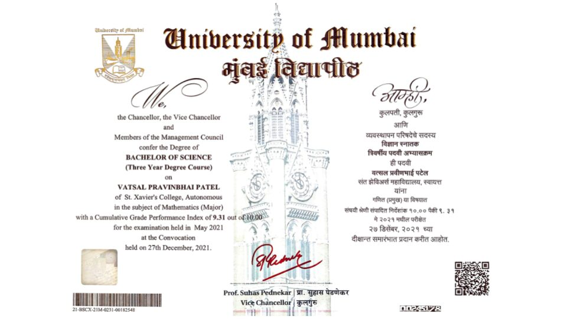
2020 · Ahead of the Curve
Building the ML Foundation
As early as 2020 — while still an undergraduate — advanced, verified specializations in deep learning and its mathematics.
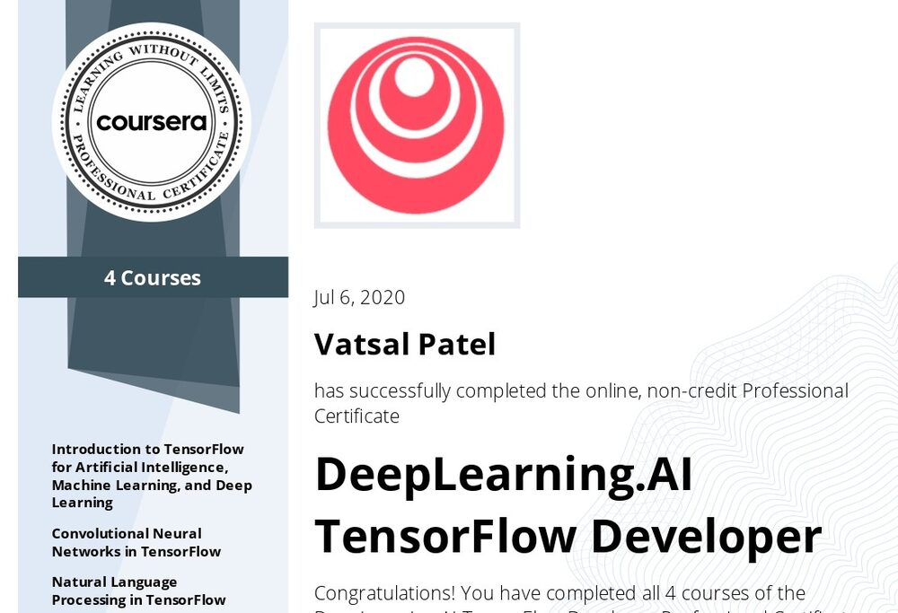
TensorFlow Developer
DeepLearning.AI — building, training & deploying scalable neural networks for vision and sequence data.
ML on Google Cloud
Production machine-learning pipelines and scalable cloud training end-to-end.
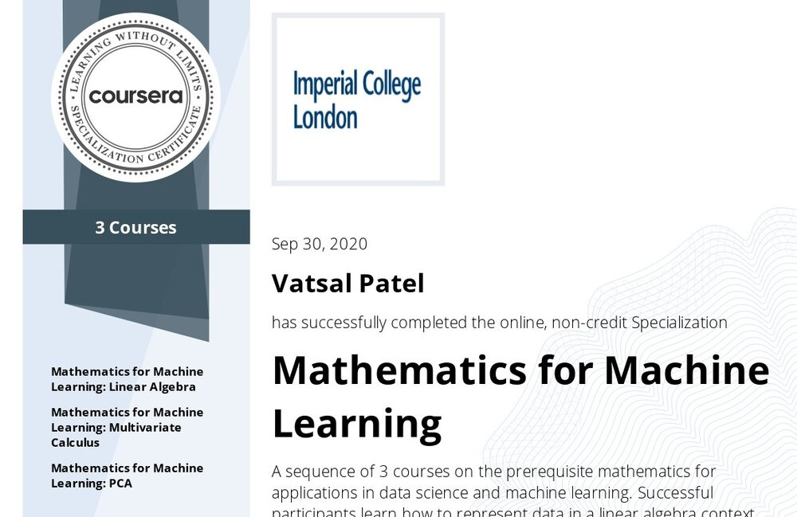
Mathematics for ML
Linear Algebra, Multivariate Calculus, and PCA — the maths under the models.
2021 · First Author
First Research Papers
First independent research — bridging optimization theory and cancer biology as an undergraduate.
Research Paper on Gradient Descent
An analytical study of gradient-based optimization — the mathematical engine behind modern deep learning.
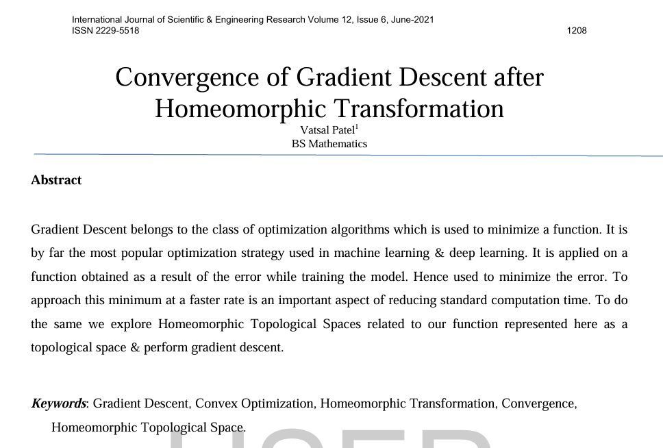
Cancer Cell Mapping — Single-cell RNA-seq
A deep-learning model mapping cancer cells to cancer cell lines and cancer types from single-cell RNA-seq pan-cancer data.
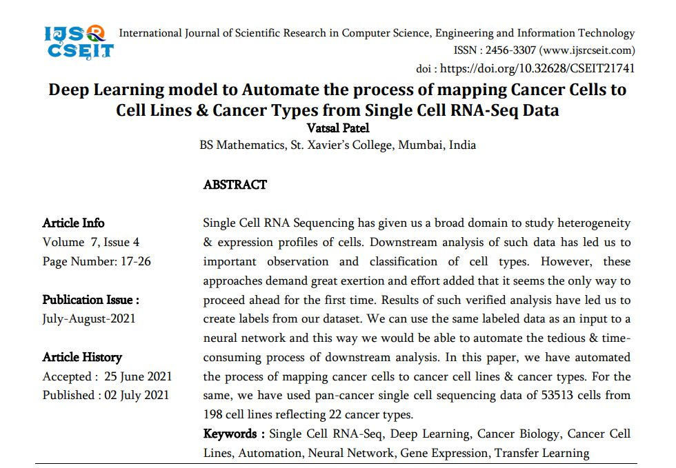
Sep 2021 — Mar 2025 · 3.5 Years
Bioinformatics Research Engineer
BRIC — NIBMG, Kalyani · National Supercomputing Mission
- National Supercomputing Mission (NSM): large-scale genomics, transcriptome mapping, and drug-discovery pipelines on HPC clusters.
- GPU pipeline engineering: scalable, high-performance GPU pipelines for tissue feature extraction from foundation models.
- Histopathology vision: deep convolutional autoencoders & Multiple Instance Learning on whole-slide images.
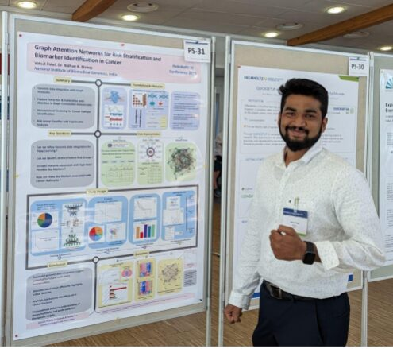
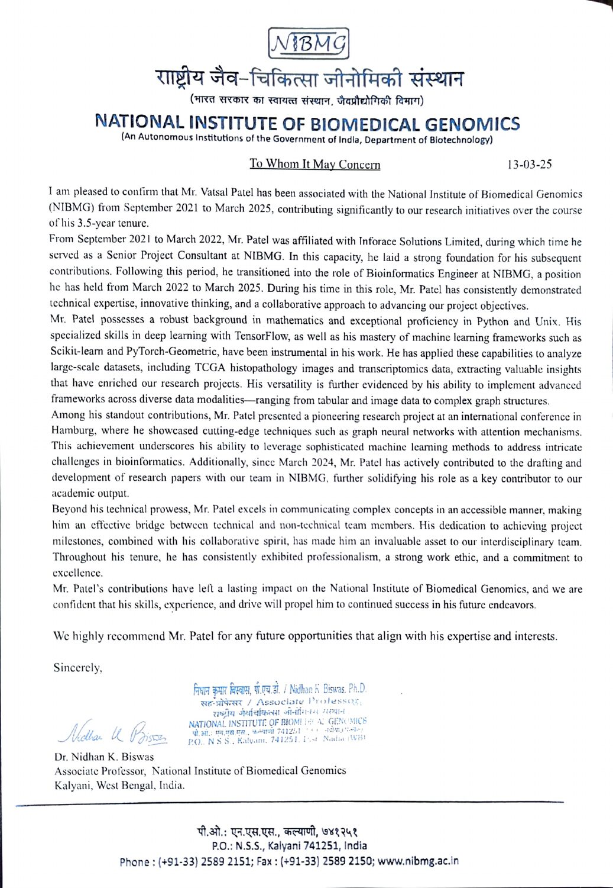
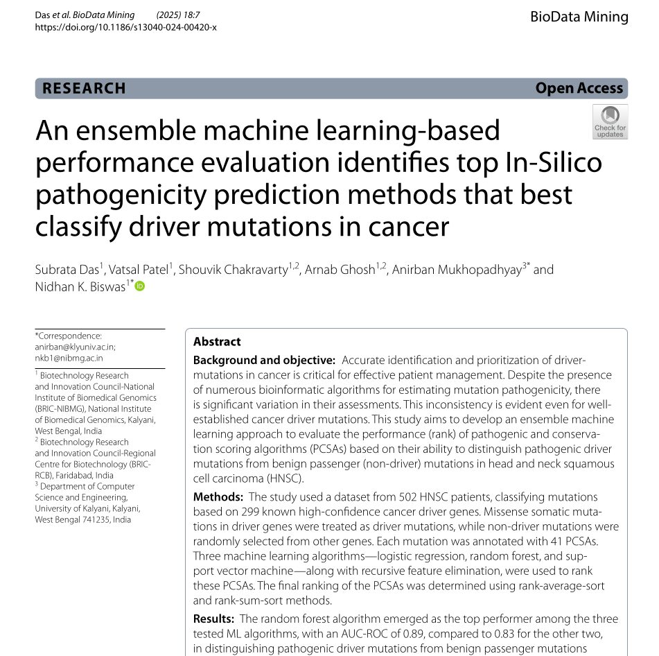
Ensemble ML evaluation of in-silico pathogenicity predictors for cancer driver mutations
Random-forest ensemble reaching AUC-ROC 0.89 across 502 HNSC patients & 299 driver genes.
10.1186/s13040-024-00420-xMar 2023 — Feb 2025 · Germany
M.Sc. Artificial Intelligence
IU International University of Applied Sciences · Grade 1.8
A formal deep-learning education layered on years of applied research — advanced ML, deep learning, and biomedical applications — pursued alongside my full-time engineering role, culminating in a Grade 1.0 thesis (next stop).
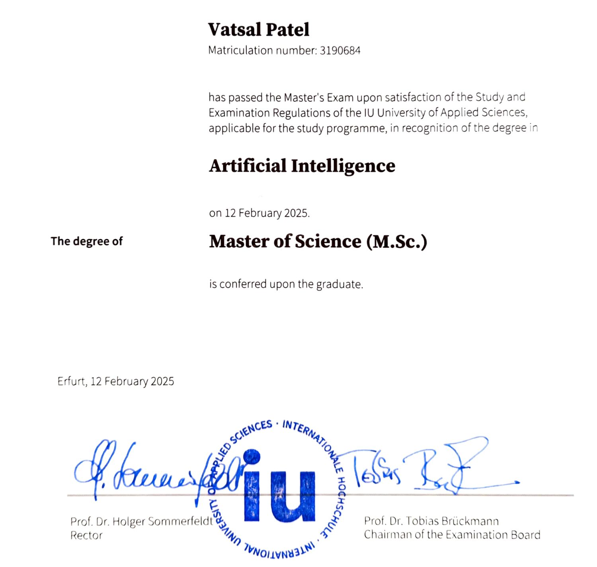
June 2023 · Helmholtz AI Conference, Germany
Graph Attention for Multi-Omics
Patient-specific heterogeneous graphs combining genomics, transcriptomics & methylomics — distilled with Graph Attention Autoencoders.
- Heterogeneous multi-omic networks per patient (TCGA / HNSCC).
- Graph Attention Autoencoders in PyTorch Geometric for biomarker discovery.
- First-author research — presented as a flash talk & poster.
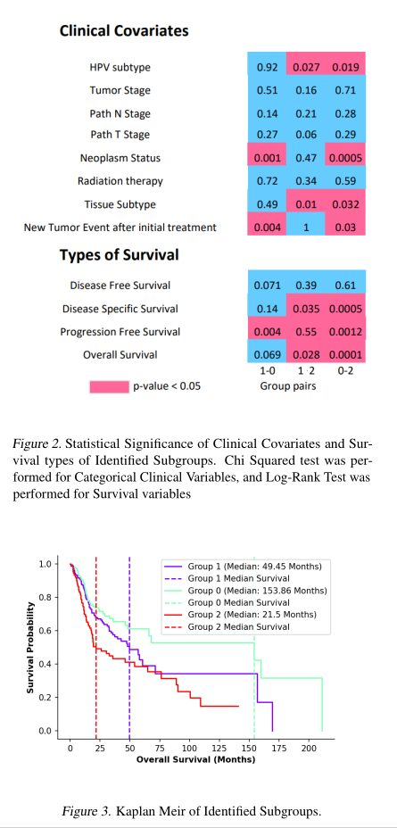
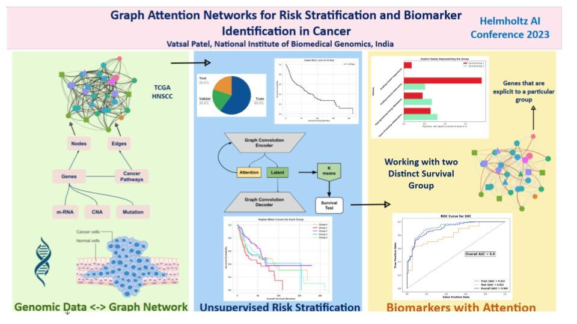
Aug 2024 · Under Journal Review
Immune-Omics × Pathology Vision
Predicting high-risk HNSCC directly from whole-slide images — AUC > 0.85 — by aligning pathology features with immune-omics.
- Contrastive feature alignment of pathology visuals ↔ immune-omics via cosine-similarity loss.
- Attention-based MIL head aggregating tile features per WSI (100k × 80k px).
- Clinical impact: high-risk stratification from an H&E slide alone — cutting NGS cost & turnaround.
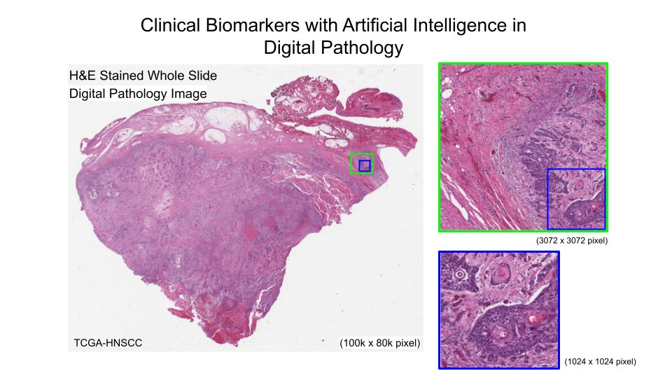
M.Sc. Thesis · Grade 1.0
RAG-LLMs for Metabolomics
The top-grade thesis became a first-author paper — MedDiscover, published in CSBJ.
MedDiscover: A Domain-Specific RAG Framework for Evidence-Grounded Knowledge Extraction in Metabolomics
Vatsal Pravinbhai Patel, Elena Jolkver, Anne Schwerk · Published 9 April 2026. Thesis graded 1.0 (top) at IU / Berlin Institute of Health.
DOI: 10.34133/csbj.0018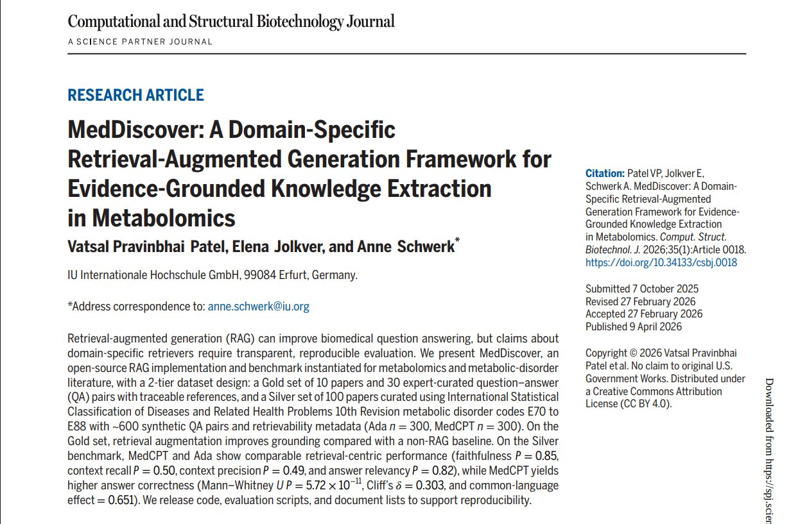
HawkFranklin Research
Founder & Principal Research Engineer · May 2025 — Present
PelliScope · AI Teledermatology
AI for pre-medical dermatology inquiry and rapid infectious screening — validated at AUC ≈ 0.863, developed for Emirates Health Services (EHS) in partnership with Oracle Health.
HawkFranklin's dermatology solution was shortlisted by Emirates Health Services for showcasing at WHX Health Dubai (Feb 9–12, 2026).
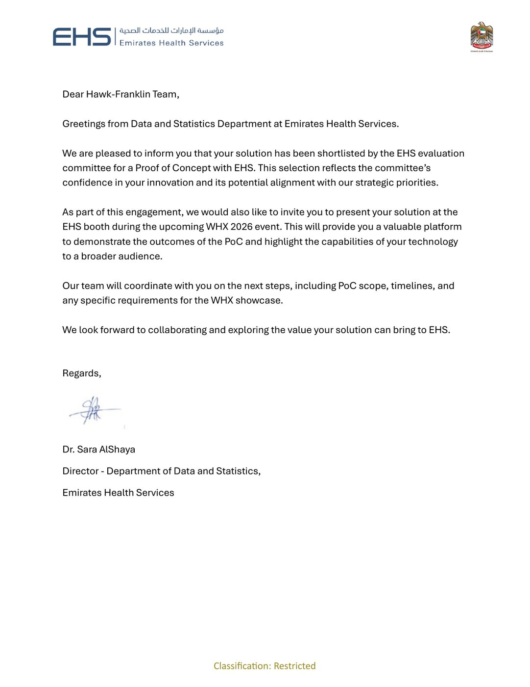
Recognised by Emirates Health Services
An official acknowledgment from EHS — the UAE's national health authority — for the PelliScope dermatology solution ahead of the WHX Dubai showcase.
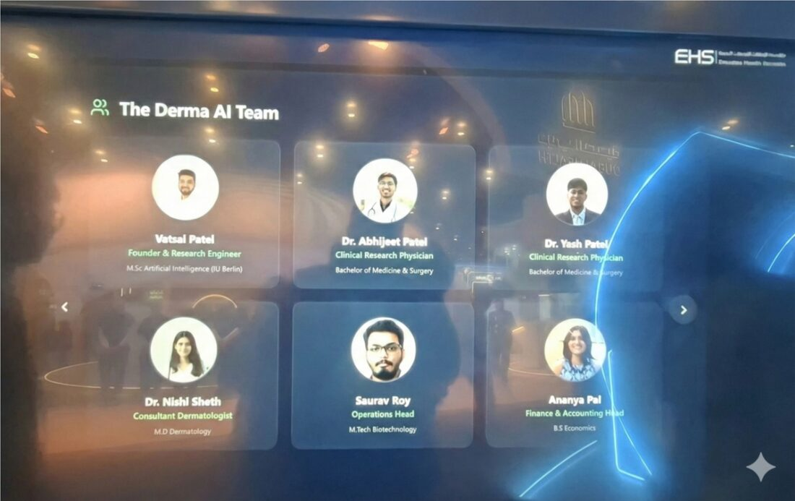
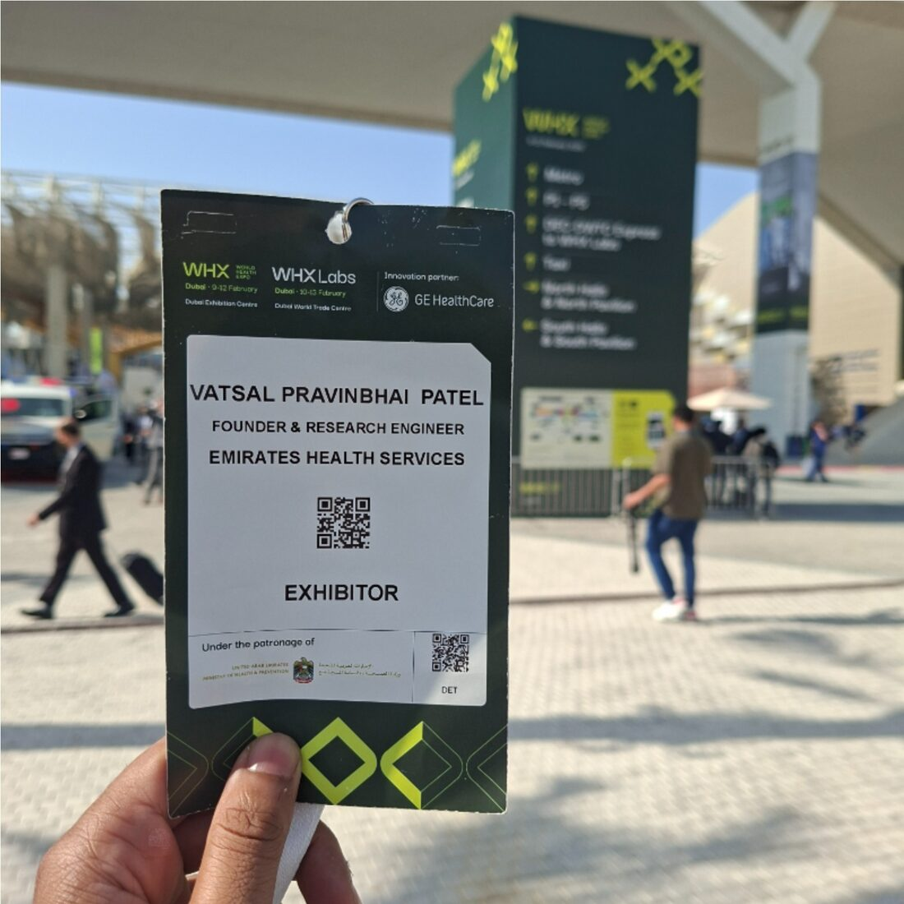
HawkFranklin Research
Flagship Pathology Workstation
OncoGemma — an advanced pathology workstation integrating high-resolution Whole-Slide Imaging with multimodal AI for cancer subtype prediction and mutational-biomarker identification, paired with my Graph Attention Autoencoder for risk stratification.
Explore OncoGemmaThe Record
Publications
MedDiscover: A Domain-Specific RAG Framework for Evidence-Grounded Knowledge Extraction in Metabolomics
10.34133/csbj.0018An ensemble machine learning-based performance evaluation identifies top in-silico pathogenicity prediction methods for cancer driver mutations
10.1186/s13040-024-00420-xMulti-faceted dysregulated immune response for COVID-19 infection explaining clinical heterogeneity
10.1016/j.cyto.2023.156434Deep Learning model to map cancer cells to cancer cell lines and cancer types from single-cell RNA-seq pan-cancer data
Verified Peer Reviewer
Patents
System and Methods for Secondary Multiomic Profile Synthesis
Systems and Methods for an Adaptive AI Agent-Driven Interactive Learning Ecosystem
Technical Toolchain
References
Dr. Anne Schwerk
Professor of AI, IU International University of Applied Sciences, Bad Honnef, Germany
anne.schwerk@iu.orgProf. Meenal Kolkar
Associate Professor, Dept. of Mathematics, St. Xavier's College, Mumbai, India
meenal.kolkar@xaviers.eduLet's build something that matters.
Clinical partners · investors · researchers on the math of biology.